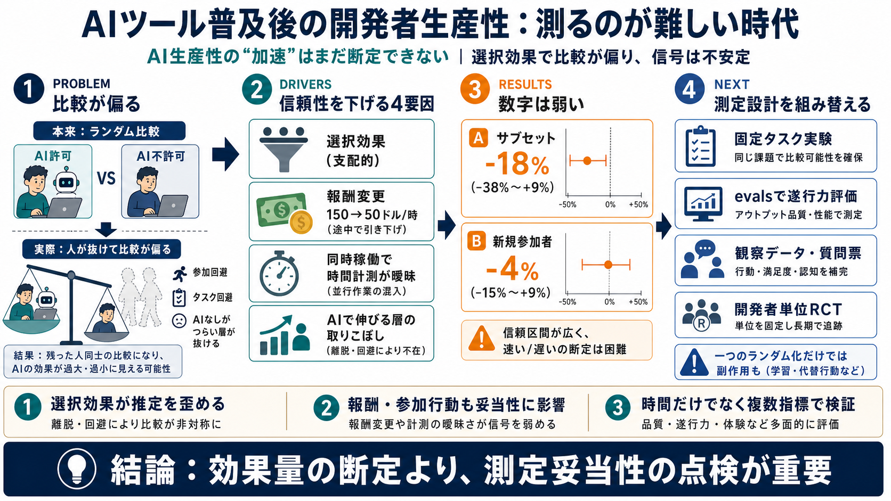

How to measure AI's impact on developer productivity
Join the live readout of the State of AI Impact in Engineering: Q2 Report on July 23rd. # How to measure AI's impact on…

Join the live readout of the State of AI Impact in Engineering: Q2 Report on July 23rd. # How to measure AI's impact on…
#### AI Impact and ROI. # AI Won’t Solve Your Developer Productivity Problems for You. AI tools aren't the magic fix for…
While coding/agentic benchmarks [1](https://metr.org/blog/2025-07-10-early-2025-ai-experienced-os-dev-study#fn:1) have p…
# 93% of Developers Use AI Coding Tools. A study published in July 2025 gave AI coding tools their most credible test ye…
# Developer Productivity With and Without GitHub Copilot: A Longitudinal Mixed-Methods Case Study. This study investigat…